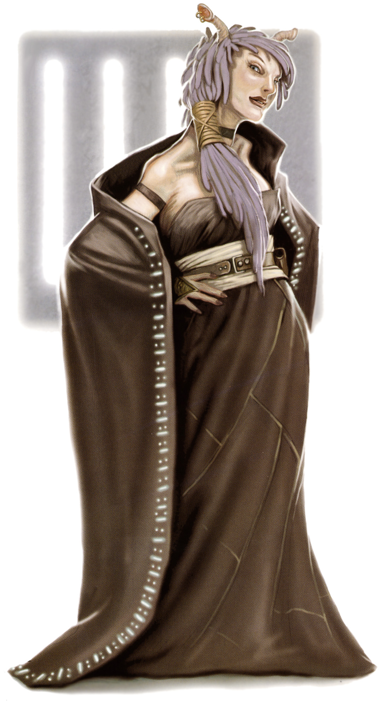

<!DOCTYPE html>
<html>

<head>
  <title>Balosar</title>

  <meta charset="utf-8">
  <meta name="viewport" content="width=device-width, initial-scale=1, shrink-to-fit=no">

  <link rel="stylesheet" href="https://stackpath.bootstrapcdn.com/bootstrap/4.1.3/css/bootstrap.min.css" integrity="sha384-MCw98/SFnGE8fJT3GXwEOngsV7Zt27NXFoaoApmYm81iuXoPkFOJwJ8ERdknLPMO"
    crossorigin="anonymous">
  <link rel="stylesheet" type="text/css" href="style.css">
</head>

<body>

  <nav class="navbar navbar-expand-lg navbar-dark bg-dark">
    <a class="navbar-brand" href="#">Star Wars Tabletop Codex</a>
    <button class="navbar-toggler" type="button" data-toggle="collapse" data-target="#navbarSupportedContent" aria-controls="navbarSupportedContent"
      aria-expanded="false" aria-label="Toggle navigation">
      <span class="navbar-toggler-icon"></span>
    </button>

    <div class="collapse navbar-collapse" id="navbarSupportedContent">
      <ul class="navbar-nav mr-auto">
        <li class="nav-item">
          <a class="nav-link" href="index.html">Home</a>
        </li>
        <li class="nav-item active" id="nav_active">
          <a class="nav-link" href="species_index.html">Species <span class="sr-only">(current)</span></a>
        </li>
        <li class="nav-item">
          <a class="nav-link" href="equipment_index.html">Equipment</a>
        </li>
        <li class="nav-item">
          <a class="nav-link" href="class_index.html">Classes</a>
        </li>
      </ul>
    </div>
  </nav>


  <br>
  <div class="Container" id="main_box">

    <a href="species_index.html"><button type="button" class="btn btn-outline-dark" id="back_button">&#9668; Back</button></a>

    <h1>Balosar</h1>
    
    <br>

    <div class="container col-8">

      <div class="card">
        <div class="card-header" id="headingOne">
          <h5 class="mb-0">
            <button class="btn btn-link btn-block" type="button" data-toggle="collapse" data-target="#collapseZero" aria-expanded="false"
              aria-controls="collapseZero" style="color: white; text-decoration: none; text-align: left">
              Stats
            </button>
          </h5>
        </div>
        <div id="collapseZero" class="collapse" aria-labelledby="headingZero">
          <div class="card-body">
            <div class="row justify-content-md-center">
              <div class="col col-lg-2 align" align="center">
                <strong>Bra</strong>
              </div>
              <div class="col col-lg-2" align="center">
                <strong>Agi</strong>
              </div>
              <div class="col col-lg-2" align="center">
                <strong>Int</strong>
              </div>
              <div class="col col-lg-2" align="center">
                <strong>Cun</strong>
              </div>
              <div class="col col-lg-2" align="center">
                <strong>Will</strong>
              </div>
              <div class="col col-lg-2" align="center">
                <strong>Pre</strong>
              </div>
            </div>
            <div class="row justify-content-md-center">
              <div class="col col-lg-2" align="center">
                2
              </div>
              <div class="col col-lg-2" align="center">
                2
              </div>
              <div class="col col-lg-2" align="center">
                2
              </div>
              <div class="col col-lg-2" align="center">
                3
              </div>
              <div class="col col-lg-2" align="center">
                1
              </div>
              <div class="col col-lg-2" align="center">
                2
              </div>
            </div>
            <br>
            <div class="row justify-content-md-center">
              <div class="col col-lg-6">
                <b>Wound Threshold: </b>10 + Brawn
              </div>
            </div>
            <div class="row justify-content-md-center">
              <div class="col col-lg-6">
                <b>Strain Threshold: </b>10 + Willpower
              </div>
            </div>
            <div class="row justify-content-md-center">
              <div class="col col-lg-6">
                <b>Starting Experience: </b>100 XP
              </div>
            </div>
            <div class="row justify-content-md-center">
              <div class="col col-lg-6">
                <p><b>Special Abilities: </b>Balosars begin the game with one free rank in <u>Streetwise</u>. They still
                  may not train Streetwise above rank 2 during character creation.</p>
              </div>
            </div>
            <div class="row justify-content-md-center">
              <div class="col col-lg-6">
                <p><b>Antennapalps: </b>Balosars add automatic [2 Advantage] to Vigilance checks they make.</p>
              </div>
            </div>
          </div>
        </div>
      </div>

    </div>
    <br>
    <p>Across the galaxy, <b>Balosars</b> are regarded as untrustworthy grifters and con artists. Callow and opportunistic,
      these near-humans are scorned by respectable society. Despite perceptions across the galaxy, though, Balosars are quite
      glib and somehow manage to talk their way into (and out of) situations that are none of their business. It is this
      talent, combined with their stubborn refusal to surrender when things go badly, that allows them to survive and thrive
      in a galaxy torn apart by war and corruption.</p>
    <br>
    <div class="accordion" id="accordionExample">

      <div class="card">
        <div class="card-header" id="headingOne">
          <h5 class="mb-0">
            <button class="btn btn-link btn-block" type="button" data-toggle="collapse" data-target="#collapseOne" aria-expanded="false"
              aria-controls="collapseOne" style="color: white; text-decoration: none; text-align: left">
              Physiology
            </button>
          </h5>
        </div>
        <div id="collapseOne" class="collapse" aria-labelledby="headingOne">
          <div class="card-body">
            <p>Tall and gaunt from generations of exposure to the pollution that plagues their homeworld, Balosars possess
              the same features and diversity found among humans across the galaxy, save for a pair of retractable, segmented
              antennapalps that push through the thick hair atop their head. Their voices are often low and gravelly, though
              not from any genetic feature. Instead, this comes from years of breathing the toxic atmosphere of their native
              planet. Balosars have the same natural lifespan as humans, though many of those who remain on their homeworld
              die prematurely from the planet’s poisoned atmosphere—or by more nefarious means when they’re on the wrong
              end of a clandestine deal.</p>
          </div>
        </div>
      </div>

      <div class="card">
        <div class="card-header" id="headingTwo">
          <h5 class="mb-0">
            <button class="btn btn-link btn-block" type="button" data-toggle="collapse" data-target="#collapseTwo" aria-expanded="false"
              aria-controls="collapseTwo" style="color: white; text-decoration: none; text-align: left">
              Society
            </button>
          </h5>
        </div>
        <div id="collapseTwo" class="collapse" aria-labelledby="headingTwo">
          <div class="card-body">
            <p>Balosars are survivors above all else. They value pragmatism, leaving morality to those who have the luxury
              of high-minded ideals. Children receive little formal education and instead are raised in the shadows of the
              massive factories that cover their home￾world. Only the resourceful and clever live to adulthood. Those who
              do must rely on the use of empty promises and double-dealing to achieve any level of success. Under the subjugation
              of the corporations that rule Balosar, few rise to anything resembling a position of power or even manage to
              live comfortably unless they are able to lie, cheat, or steal their way into employment with these amoral businesses.</p>
            <p>Few even attempt to reach for this impossible status. Instead, many look for the first opportunity to leave
              their poisoned homeworld and carve out a niche elsewhere in the galaxy. Knowing that it is almost impossible
              for a near-human to achieve success under Palpatine’s rule, most seek fortune and glory in the galaxy’s criminal
              underbelly, working for a Hutt kajidic, the Black Sun syndicate, or a similar organization. Even other criminals
              tend to distrust Balosars, which makes it difficult for them to obtain a respectable position. Instead, many
              must content themselves with being an errand runner, informant, or peddler of illegal goods.</p>
            <p>Even in these low-level positions, Balosars are quite skilled at gathering information. Some establish themselves
              as invaluable employees by quietly amassing critical information and revealing it at a key moment. Others secretly
              sell their information to corporations, competing criminal organizations, or whoever is willing to pay their
              substantial fee. In spite of Balosars’ pride and tenacity, their tendency to quietly betray their employers
              prevents them from finding positions of respect and authority, regardless of how well-informed or skilled they
              are.
            </p>
          </div>
        </div>
      </div>

      <div class="card">
        <div class="card-header" id="headingThree">
          <h5 class="mb-0">
            <button class="btn btn-link btn-block" type="button" data-toggle="collapse" data-target="#collapseThree" aria-expanded="false"
              aria-controls="collapseThree" style="color: white; text-decoration: none; text-align: left">
              Homeworld
            </button>
          </h5>
        </div>
        <div id="collapseThree" class="collapse" aria-labelledby="headingThree">
          <div class="card-body">
            <p><b>Balosar</b> is a Core World in ruins from unchecked industry. In its most famous industrial operation,
              balo mushrooms, found only on Balosar, are refined in towering factories to produce ixetal cilona, a powerful
              narcotic used in everything from death sticks to interrogation drugs. Though technically subject to Imperial
              rule, Balosar is in fact controlled by massive corporations, among them BioTech Industries and Fergriss Pharmaceuticals.
              These corporations continually engage in industrial sabotage and espionage, using the native Balosars as pawns
              in their greedy machinations. Substantial kickbacks to corrupt officials ensure the Empire ignores these illicit
              operations. Balosars caught in the webs of corporate corruption refuse to turn to the Empire for aid, fearing
              draconian reprisals—even orbital bombardment—that would sound the death knell for their already dying world.</p>
            <p>What little land that is not covered in factories and urban sprawl is home to corporate-controlled farms,
              many of which extend far underground. Each field is under heavy security. Corporations maintain greenhouses
              with intrusion countermeasures that rival those on Coruscant. These include enforcement droids, patrol craft,
              and large squads of armed guards. The farms, especially those underground, grow the coveted balo mushrooms,
              which are harvested and then refined into ixetal cilona in the city. It is regular practice for competing corporations
              to hire teams of deniable assets to rob, sabotage, or even destroy growing fields controlled by an opposing
              company. Many Balosars are tempted to engage in these quick and dirty operations for the promise of a few fast
              credits while throwing a spanner</p>
          </div>
        </div>
      </div>
      <div class="card">
        <div class="card-header" id="headingFour">
          <h5 class="mb-0">
            <button class="btn btn-link btn-block" type="button" data-toggle="collapse" data-target="#collapseFour" aria-expanded="false"
              aria-controls="collapseFour" style="color: white; text-decoration: none; text-align: left">
              Language
            </button>
          </h5>
        </div>
        <div id="collapseFour" class="collapse" aria-labelledby="headingFour">
          <div class="card-body">
            <p>The Balosars speak their own language, also called Balosar. It combines rasping hisses and odd clicks with
              subtle gestures from their antennapalps. This makes it impossible for non-Balosars to communicate fluently;
              when outsiders speak the language, it comes off as stilted and crude. Balosars speak Basic and are as capable
              as humans of learning other languages. They also regularly use their antennapalps to pass simple messages to
              other Balosars without other species taking notice.</p>
          </div>
        </div>
      </div>
      <div class="card">
        <div class="card-header" id="headingFive">
          <h5 class="mb-0">
            <button class="btn btn-link btn-block" type="button" data-toggle="collapse" data-target="#collapseFive" aria-expanded="false"
              aria-controls="collapseFive" style="color: white; text-decoration: none; text-align: left">
              Life in the Alliance
            </button>
          </h5>
        </div>
        <div id="collapseFive" class="collapse" aria-labelledby="headingFive">
          <div class="card-body">
            <p>Most Balosars join the Rebel Alliance out of a simple desire to survive. Those who can tolerate the idealistic
              rhetoric of the Alliance find themselves in the unlikely position of being seen as valued assets because of
              their natural charm. Some Balosars find purpose or even hope among their new allies, discovering a renewed
              spirit and an unexpected sense of belonging.</p>
          </div>
        </div>
      </div>
      <div class="card">
        <div class="card-header" id="headingSix">
          <h5 class="mb-0">
            <button class="btn btn-link btn-block" type="button" data-toggle="collapse" data-target="#collapseSix" aria-expanded="false"
              aria-controls="collapseSix" style="color: white; text-decoration: none; text-align: left">
              Death Sticks
            </button>
          </h5>
        </div>
        <div id="collapseSix" class="collapse" aria-labelledby="headingSix">
          <div class="card-body">
            <p>Death sticks are a highly addictive and highly illegal narcotic. Distilled and refined from ixetal cilona,
              they are sold in small, easily concealed, red or yellow rods. When consumed, they produce deceptively mild
              hallucinations in the user. Unfortunately, death sticks are very addictive after even a single use and rapidly
              destroy both physical and mental health at an alarming rate.</p>
            <p>Long-term use can reduce an addict’s lifespan by nearly half, and it is rumored that death sticks can diminish
              a Force sensitive’s connection to the Force. Characters under the influence of death sticks suffer &#9632 on
              any task they attempt for the remainder of the encounter; at the GM’s discretion, they may also find their
              Force rating reduced by one for the same amount of time. The effects of long-term addiction take years or decades
              to manifest and are likely to be beyond the scope of a single campaign.</p>
          </div>
        </div>
      </div>
    </div>

  </div>

  <script src="https://code.jquery.com/jquery-3.3.1.slim.min.js" integrity="sha384-q8i/X+965DzO0rT7abK41JStQIAqVgRVzpbzo5smXKp4YfRvH+8abtTE1Pi6jizo"
    crossorigin="anonymous"></script>
  <script src="https://cdnjs.cloudflare.com/ajax/libs/popper.js/1.14.3/umd/popper.min.js" integrity="sha384-ZMP7rVo3mIykV+2+9J3UJ46jBk0WLaUAdn689aCwoqbBJiSnjAK/l8WvCWPIPm49"
    crossorigin="anonymous"></script>
  <script src="https://stackpath.bootstrapcdn.com/bootstrap/4.1.3/js/bootstrap.min.js" integrity="sha384-ChfqqxuZUCnJSK3+MXmPNIyE6ZbWh2IMqE241rYiqJxyMiZ6OW/JmZQ5stwEULTy"
    crossorigin="anonymous"></script>

  <div class="footer_bar"></div>
</body>

</html>